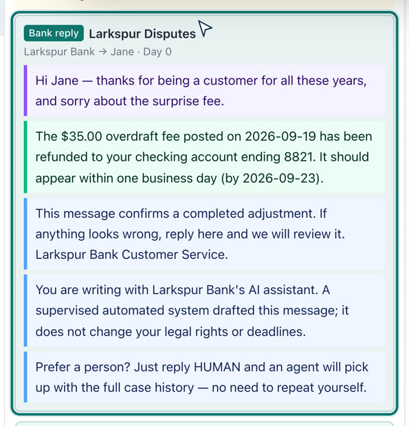

Turn every inbound email into a compliant, resolved case.
Wu Kun, wukun2005@gmail.com, October 2026
WhyProblem & motivationWhatScope, how it works, the metricsDemoKey user experience
02 Target user
Mid-size banks are the target.
Of 8,445 insured US institutions, 262 banks sit in the band we can serve: big enough to carry the full regulatory load, small enough to buy rather than build.
02 / 10
03 Why they care
Email is on the clock, costly and slow.
Three pains in one inbox: a legal clock starts at receipt, each email costs $6-12 and waits 27 hours, and agents lose 28% of their time re-typing.
03 / 10
04 Scope
Sort by category first, then automate.
Sort order first: volume × determinability × who they are, gated by penalty risk. Then one line: everything reversible goes to AI, everything consequential stays with a human.
Human-only in phase 1: complaints, fraud (the customer says they were defrauded) and off-brief mail are detected, clocked and handed to a person. Spam / noise is auto-archived in Phase 1 and never enters intake.
04 / 10
05 How it works · 5-step
The category decides who acts.
Every email runs the same five steps. Step 2 stamps the row from 04 and who is writing; step 3 reads the matrix (06) and picks one of three roads; only step 4 sends, and what it sends is assembled.

Assembled from three sources. Click to enlarge.
Connective tissue · 1 line in 5
System slots · account data, filled in
Locked template · compliance wording
05 / 10
06 AI and humans
The Policy RIL Matrix governs autonomy.
06 / 10
07 Onboarding
Each bank's policies, compiled onto one shared platform.
Every bank gets its own categories and R × I matrix, signed before it runs.
One runtime, per-bank configuration, so the next bank takes weeks. Architecture: B2.
07 / 10
08 Self-service tool chain
How an email becomes a case — and how new intents enter the catalog.
One pipeline reads every inbound email; one config-driven loop adds new intents without retraining the model.
Each hit carries evidence sentences + confidence. Regulated intents start their clock at intake; adjudication stays human-only.
Bank admin (customer)
1.Sees a new intent surface in the review queue (unknown / low-confidence).
2.Names it, adds a short description, examples and keywords via config UI.
3.Sets routing, SLA, reply template and identity threshold.
4.Approves → intent is live in the catalog, no model retrain.
Vendor (us)
1.Zero-shot / clustering surfaces candidate new intents across banks.
2.Aggregates and anonymizes them; validates with backtest.
3.Batches a single shared-model retrain; ships one upgrade to all banks.
4.No per-bank model training; support stays scalable.
Four groups want this customer. Nobody has the email case.
Window: 12–18 months. We spend it on what the platform already ships — CXA Operations Center, Agent Builder, Automation Flows, and core-banking connectors since April 2025. Freshworks has shipped autonomous email since 2025-06; nobody has shipped the case. Most automate the reply; few propose the rules.
B1
Backup · B2 Architecture
A thin vertical layer. Not a new platform.
B2
Backup · B3 Roadmap
One governance layer, three waves.
New · we addA bank-written limit matrix (R × I → L) · a clock that turns a promise into a deadline · in-thread step-up · dispute intake · email defense
The new part is the layer, not the channel — a thin vertical layer, no new platform or runtime. Full stack: B2.
B3
Backup · B4 Trade-offs
Reversible earns it. Irreversible never does.
We choose
The price we accept
Default L2, graduate one intent at a time
Every write starts behind a human one-click and only moves to L3 with backtest evidence and a dual signature.
↔
A slower first month
We ship fewer autonomous actions than a rival promising 90% on day one — and compliance signs the same sheet as the business.
Dispute intake only — never adjudication
AI files, clocks, receipts and chases; investigators decide, AI drafts the outcome letter, a person signs it.
↔
The biggest line item on the table
We give up the full-dispute automation prize and keep the license to operate — R4 cells have no graduation path at all.
Also given up, on purpose: assembled letters over fluent ones, an in-thread step-up link over in-app, a runtime of our own, and mega-bank deals — they build, and Sierra owns that story.
B4
Backup · B5 Risk
The risks that would end this product.
RISK 01
Missing a regulated intent
Half a sentence is a running clock.
136 violations74% sat in error resolution (2025)
What we built
High-recall detection at ingest, before an agent opens the mail
False positives preferred — recall ≥99.5% gates all autonomy
No samples in 90 days means no L3
RISK 02
The email attack surface
BEC, ATO and attachment injection — under ATO every normal identity signal still passes.
BECATOattachment injection
quarantined as data⊘R3 has no tool
What we built
Injected text is quarantined as data, never as instruction
R3 combinations have no callable function on this channel
Confirmation goes only to on-file contacts
RISK 03
Numeric hallucination
An invented fee or date is a Reg E and UDAAP violation; one wrong write can be unrecoverable.
✓number from a system slot → sent
✕model-written number → locked template
✎money stays R4 · L1 human-signed
What we built
Numbers only from system slots — never written by the model
Failed claim check → the locked template
Money stays R4: L1 human-signed
Also on the register: tipping-off vs duty to speak (31 CFR 1020.320(e)) · over-disclosure to an unverified sender (GLBA) · third-party risk review · vulnerable-customer fairness · the LLM-as-judge flipping verdicts in evaluation (14%) · sign-off fatigue — L2 approvals and AI nominations both drift toward rubber-stamping (watch the approve-without-edit rate, sample the approved files) · a step-up link that collides with “never click a link in an email” training.
B5
The native player controls also offer true full-screen